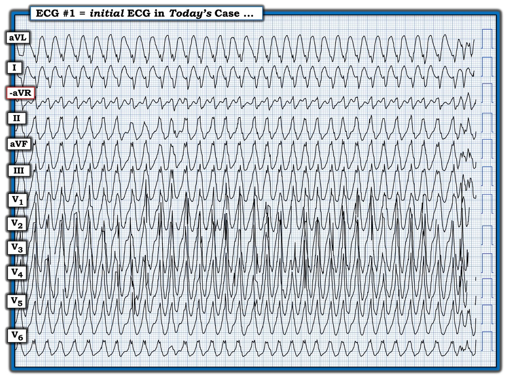
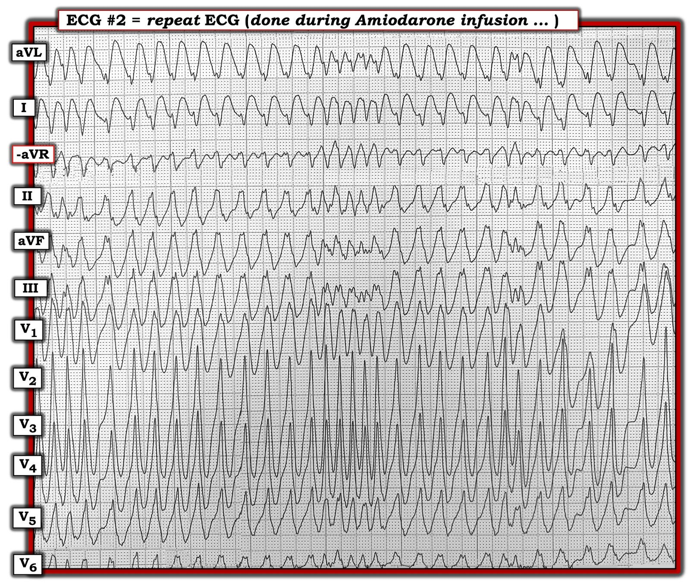
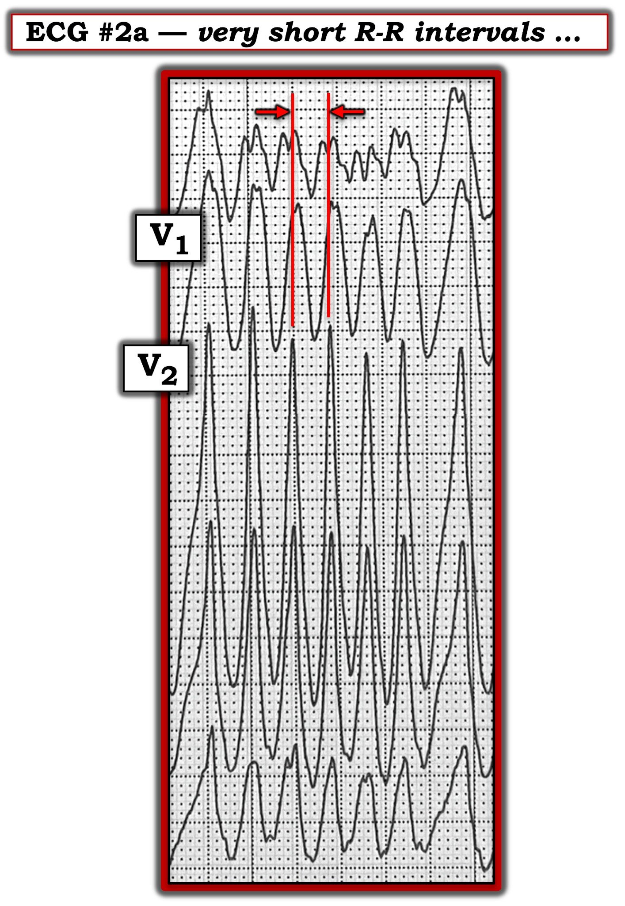
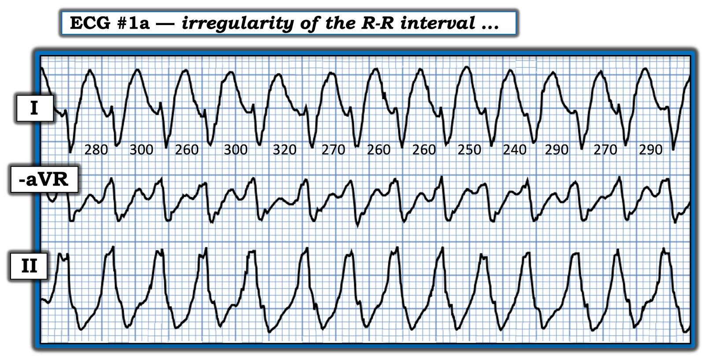
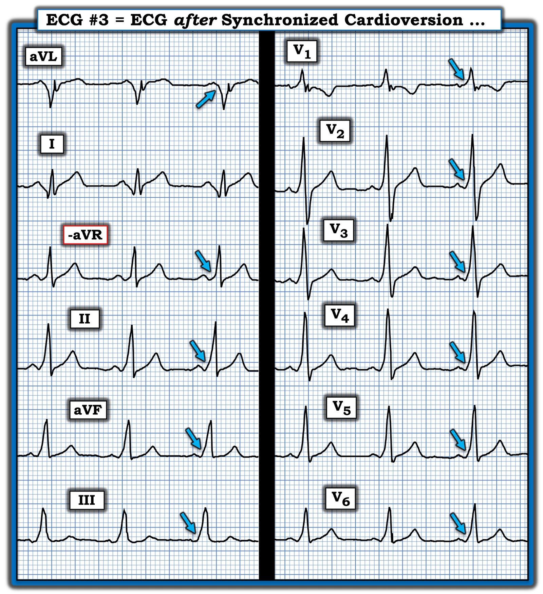
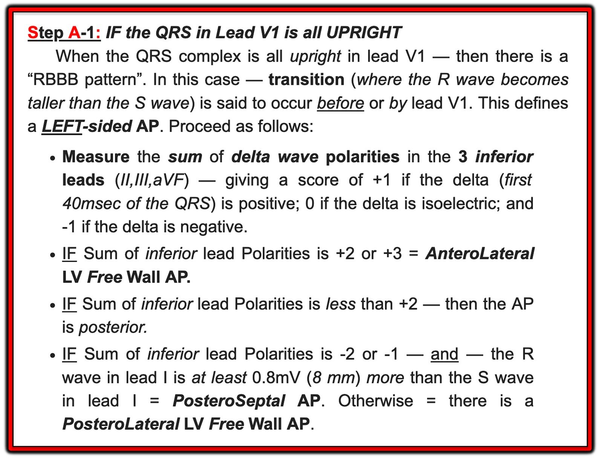
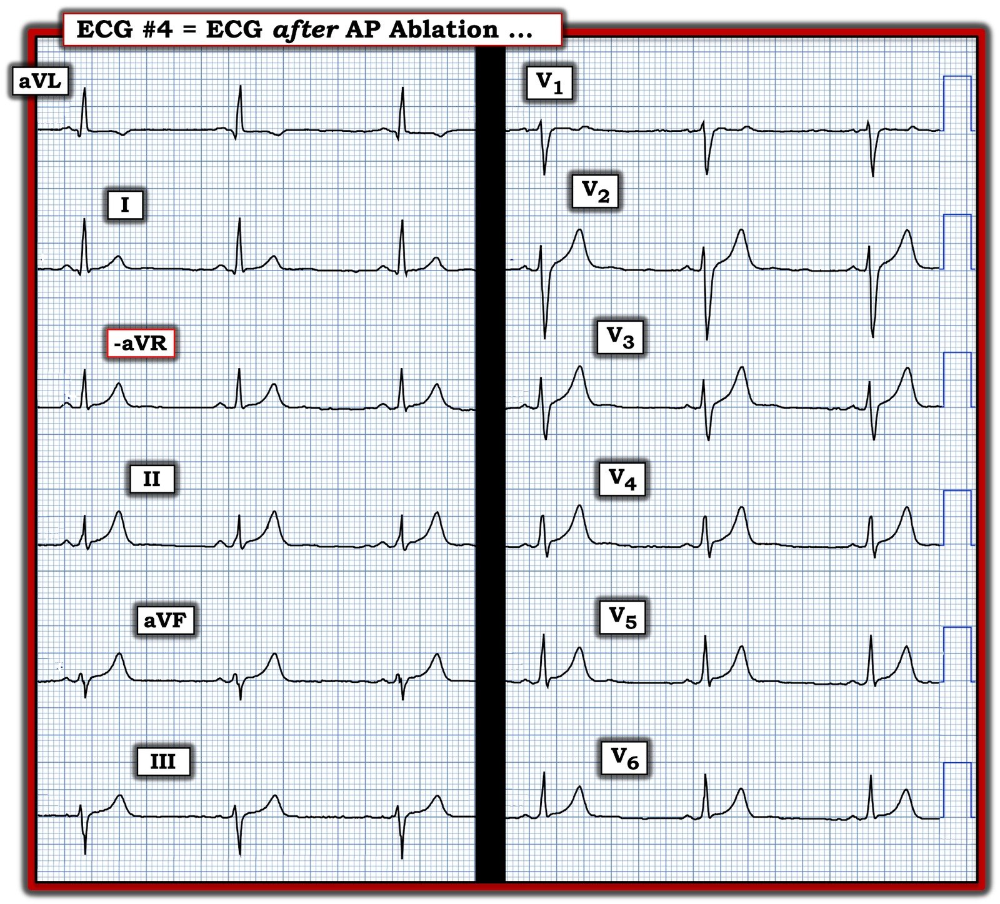

13/12/2024 — Hồi hộp đánh trống ngực đột ngột ở một người trẻ tuổi
Bản dịch tiếng Việt của bài "Sudden Palpitations in a Young Adult" – Dr. Smith’s ECG Blog. Giữ nguyên toàn bộ 8 hình ảnh của bản gốc.
Tác giả: Magnus Nossen và Ken Grauer (kèm Bình luận của Smith)
Điện tâm đồ ở Hình 1 được dịch vụ xe cứu thương truyền điện tử về để đánh giá. Bệnh nhân là một nam thanh niên khởi phát hồi hộp đánh trống ngực (palpitations) đột ngột. Bệnh nhân ổn định huyết động vào thời điểm ghi điện tâm đồ #1.
CÂU HỎI:
- Bạn sẽ diễn giải điện tâm đồ này thế nào?
- — Cần xem xét những bệnh lý nào trong chẩn đoán phân biệt?
- — Bạn sẽ xử trí bệnh nhân này ra sao?
=====================================
LƯU Ý: Các điện tâm đồ trong ca hôm nay được ghi theo định dạng Cabrera (Xem Bình luận của Dr. Grauer trong bài ngày 26 tháng Mười năm 2020 trên Dr. Smith’s ECG Blog để ôn lại về định dạng Cabrera).
=====================================


Bệnh nhân được đội cấp cứu ngoài viện (EMS) chuyển đến khoa cấp cứu, tại đây điện tâm đồ được đọc là VT (nhịp nhanh thất — Ventricular Tachycardia). Bệnh nhân không có biểu hiện nguy kịch trên lâm sàng, và ngoài tần số tim — các dấu hiệu sinh tồn hoàn toàn bình thường. Đến thời điểm này, triệu chứng hồi hộp đã kéo dài khoảng 3 giờ.
- Vì bệnh nhân ổn định và dung nạp được rối loạn nhịp — nhóm điều trị quyết định dùng Amiodarone tĩnh mạch để chuyển nhịp bằng thuốc.
Smith: Bạn nghĩ sao?
Bình luận của Smith: Tần số tim rất nhanh, 204. Bất cứ khi nào tim nhanh đến mức này, bạn cần hết sức cẩn thận để xác định nhịp không đều (như trong rung nhĩ đáp ứng thất nhanh) hay đều (như trong VT). Hãy dùng compa đo (calipers) nếu cần. Trong ca này, hãy nhìn vào góc trên tận cùng bên phải, ở chuyển đạo aVL. Bạn có thể dễ dàng thấy 4 phức bộ tạo thành 3 khoảng RR cuối cùng. Khoảng thứ 3 tính từ cuối (giữa phức bộ QRS thứ 4 và thứ 3 tính từ cuối) là 310 ms. Khoảng RR cuối cùng chỉ 160 ms. Như vậy nhịp này không đều hoàn toàn. Đây không phải VT; đây là AF. Tiếp theo, hãy để ý rằng các phức bộ QRS đa dạng. Điều này không phải vì đây là VT đa dạng; mà vì đây là WPW kèm rung nhĩ. Bất kỳ chuyển đạo nào trong V2-V5 cũng có phức bộ QRS đa dạng. Đặc điểm cuối cùng củng cố vững chắc chẩn đoán AF kèm WPW chính là khoảng RR rất ngắn 160 ms đó. Điều này thực sự chỉ xảy ra trong AF WPW và cũng khiến việc cho thuốc ức chế nút AV trở nên rất nguy hiểm.
Còn cách xử trí bằng Amiodarone thì sao?:
Đây có thể là một sai lầm lớn. Amiodarone là một thuốc ức chế nút AV và về lý thuyết có thể gây ra VFib (rung thất — Ventricular Fibrillation). Tuy nhiên, một bài báo tương đối gần đây nhận thấy 18 trong số 30 bệnh nhân ổn định bị AF kèm WPW đã chuyển về nhịp xoang và không có trường hợp nào xuất hiện tăng tốc thất hay VF. (tài liệu 1)
Đây là phần Mở đầu của bài báo đó:
“Mặc dù một số ca đã được báo cáo cho thấy Amiodarone tĩnh mạch có thể làm tăng tần số tim hoặc thậm chí thúc đẩy tần số thất nhanh chuyển thành VFib — các biến cố bất lợi này xảy ra ở những bệnh nhân thường có
tình trạng tổn hại huyết động. Do đó, Amiodarone tĩnh mạch từng là một trong các lựa chọn hàng thứ 2 để chuyển nhịp cấp bằng thuốc ở những bệnh nhân như vậy khi không mất ổn định huyết động.
- Hướng dẫn ESC 2019
về xử trí bệnh nhân nhịp nhanh trên thất
chỉ ra rằng không nên cân nhắc dùng Amiodarone tĩnh mạch ở những nhóm bệnh nhân này. Tuy vậy, khuyến cáo này vẫn
dựa trên các bài báo công bố trước năm 2006.”
Có thể dùng Amiodarone tĩnh mạch một cách an toàn. Nhưng tại sao bạn lại muốn dùng nó? Tại sao không đơn giản là an thần rồi sốc điện chuyển nhịp, vốn đã được biết là an toàn?
Dĩ nhiên những người điều trị trong ca này đã dùng Amiodarone vì họ nghĩ đây là VT. Nếu biết đó là AF kèm WPW, có lẽ họ đã sốc điện chuyển nhịp?
=====================================
Tiếp diễn CA BỆNH hôm nay:
Điện tâm đồ được ghi lại trong khi đang truyền Amiodarone tĩnh mạch (Hình 2).
- Tại sao điện tâm đồ ở Hình 2 lại đặc hiệu chẩn đoán (pathognomonic)?


Điện tâm đồ ở Hình 2:
Điện tâm đồ ghi lại này đặc hiệu chẩn đoán WPW:
- Điện tâm đồ #2 cho thấy một WCT không đều hoàn toàn (nhịp nhanh QRS rộng — Wide Complex Tachycardia).
- Phần khởi đầu của QRS chậm và QRS rất rộng, đo được >160 ms.
- Có hiện tượng QRS đa dạng — nhưng điều quan trọng là trục ở các chuyển đạo chi không thay đổi. (Nếu đây là VT đa dạng — trục sẽ thay đổi! ).
- Ở một số đoạn của bản ghi — các khoảng RR cực kỳ ngắn (Xem Hình 3 bên dưới, là đoạn trích phóng to từ Hình 2, trong đó khoảng R-R cực kỳ ngắn).


Tốc độ giấy ở Hình 3 là 25 mm/giây. Do đó — mỗi ô nhỏ có thời gian 40 ms.
- Khoảng R-R ngắn nhất ở Hình 3 dài hơn 4 ô nhỏ một chút, đo được 170 ms. Điều này tương ứng với tần số thất trên 350/phút! Rõ ràng — đây là một tình huống nguy hiểm!
- Điểm MẤU CHỐT: Không có gì ngoài AFib kèm WPW có thể tạo ra đáp ứng thất nhanh đến mức này (đó là lý do Hình 2 đặc hiệu chẩn đoán AFib ở bệnh nhân có WPW).
=====================================
Hãy XEM LẠI một lần nữa Hình 1 …
Để thuận tiện cho việc này — tôi đã đặt lại Hình 1 bên dưới, cho thấy điện tâm đồ ban đầu trong ca hôm nay.
- BẠN có nhận ra rằng có sự thay đổi đáng kể của khoảng R-R trong bản ghi có QRS giãn rộng rõ ràng này không?
Thú nhận của Grauer:
Khi lần đầu xem điện tâm đồ #1 trên thiết bị di động — tôi đã nghĩ “WCT đều, không có sóng P — vậy là VT”. (Tôi nghĩ 3 nhát cuối ở Hình 1 là khởi đầu của việc VT này thoái biến thành VFib).
- Tôi đã phải khiêm tốn xem lại sau khi Dr. Nossen chỉ ra sự không đều tinh tế-nhưng-có-thật vốn thực sự hiện diện trên toàn bộ bản ghi
- Bài học: Rất DỄ bỏ sót sự không đều trong bản ghi ban đầu hôm nay — nhất là khi xem trên màn hình nhỏ mà không có compa đo.
Ở Hình 4 — Chúng tôi phóng to một đoạn chọn lọc của bản ghi từ điện tâm đồ #1 — khi tập trung vào độ dài tương đối của từng khoảng R-R — có thể nhận ra sự không đều bằng mắt thường (ngay cả khi không có compa đo).
- Các con số bên dưới các phức bộ ở chuyển đạo I trong Hình 4 là số đo chính xác tính bằng mili giây của 13 khoảng R-R trong đoạn trích phóng to này.
- Điểm MẤU CHỐT: Ngay khi nhận ra điện tâm đồ #1 là một WCT không đều hoàn toàn, không có sóng P, với đáp ứng thất luôn cao hơn hẳn 220/phút — chúng ta đã chẩn đoán được AFib rất nhanh ở bệnh nhân có WPW (Một ca khác — Xem Bình luận của tôi trong bài ngày 12 tháng Ba năm 2020 trên Dr. Smith’s ECG Blog).


Về AFib kèm WPW:
Tần số tim rất nhanh và có lúc các khoảng R-R cực kỳ ngắn khiến bệnh nhân AFib kèm WPW có nguy cơ ngừng tim do VFib.
- Nguy cơ nhịp thoái biến thành VFib dường như tỷ lệ nghịch với độ dài khoảng R-R. Khoảng R-R càng ngắn — nguy cơ thoái biến thành VFib càng cao (tài liệu 2).
Nút AV có một đặc tính riêng biệt mà cơ tim và các phần khác của hệ thống dẫn truyền không có. Đặc tính điện sinh lý này được gọi là dẫn truyền giảm dần (decremental conduction). Về bản chất, điều này có nghĩa là nếu nút AV bị kích thích lặp đi lặp lại với các khoảng rất ngắn — thời kỳ trơ sẽ kéo dài ra. Nói cách khác — nút AV sẽ dẫn truyền chậm hơn.
- Ngoài ra — dẫn truyền qua nút AV phụ thuộc calci, và chậm hơn dẫn truyền qua cơ tim. Cùng với đặc tính dẫn truyền giảm dần — điều này có nghĩa là nút AV sẽ đóng vai trò như một “cái phanh” đối với các xung động AFib đang tìm cách xuống tới tâm thất. Kết quả là — tần số thất hiếm khi vượt quá 200/phút trừ khi có một AP (đường phụ — Accessory Pathway).
Nếu các khoảng R-R trở nên rất ngắn (tức là, qua dẫn truyền theo AP) — điều này có thể tạo thuận lợi cho hiện tượng “R trên T” (R-on-T), vốn có thể khởi phát VFib.
- Ở bệnh nhân có tiền kích thích và AFib — một phần cơ tim sẽ được khử cực qua hệ thống dẫn truyền (qua nút AV). Mức độ xảy ra điều này có thể giải thích một phần tình trạng QRS đa dạng thường thấy trong AFib tiền kích thích. Có mức độ “hỗn hợp” (fusion) thay đổi giữa khử cực cơ tim qua AP và qua hệ thống dẫn truyền. (tài liệu 3)
Nếu bệnh nhân AFib kèm WPW được cho thuốc ức chế nút AV — phần cơ tim được khử cực qua hệ thống dẫn truyền sẽ ít đi. Kết quả là — một phần lớn hơn của cơ tim phải chịu các khoảng ghép rất ngắn, làm tăng nguy cơ rung thất.
Tóm lại: Chính vì những lý do trên mà nhiều bác sĩ lâm sàng cho rằng bệnh nhân WPW kèm AFib không nên được cho thuốc ức chế nút AV. Thay vào đó — họ ưu tiên an thần và sốc điện chuyển nhịp đồng bộ là điều trị lựa chọn cho bệnh lý này.
- Quan điểm phản biện của Grauer: Tôi luôn cảm thấy rằng “Phải có mặt tại chỗ mới biết được”. Theo bài báo năm 2021 của Ren và cs. mà Dr. Smith đã trích dẫn ở trên — Amiodarone tĩnh mạch có thể hiệu quả ở một số lượng đáng kể bệnh nhân (các thuốc khác có thể hiệu quả là Procainamide và Ibutilide). Rõ ràng — sốc điện chuyển nhịp đồng bộ là điều trị ban đầu phù hợp (và thường là tối ưu) cho WPW kèm AFib. Nhưng thử điều trị nội khoa có thể hợp lý ở một số bệnh nhân chọn lọc nếu người điều trị túc trực ngay bên giường bệnh trong suốt thời gian truyền thuốc chống loạn nhịp, sẵn sàng vào-bất-kỳ-lúc-nào sốc điện chuyển nhịp khi có bất kỳ đáp ứng bất lợi nào.
=====================================
Tiếp diễn CA BỆNH hôm nay:
Bệnh nhân hôm nay được sốc điện chuyển nhịp bằng dòng điện một chiều (DC) sau khi truyền Amiodarone tĩnh mạch ban đầu.
- Điện tâm đồ ở Hình 5 cho thấy kết quả sau sốc điện chuyển nhịp đồng bộ. Các mũi tên XANH LAM đánh dấu các sóng delta trên bản ghi sau chuyển nhịp.


Định vị AP:
Dr Grauer đã tổng hợp kết quả của một số thuật toán dự đoán để tạo nên một cách tiếp cận dễ sử dụng nhằm ước lượng vị trí của AP (đường phụ — Accessory Pathway).
- Cách tiếp cận của Dr. Grauer có thể xem trong Bài Blog này —
- Theo Hình 5 — Vì QRS trong ca hôm nay dương hoàn toàn ở chuyển đạo V1 — cách tiếp cận được trình bày ở Hình 6 gợi ý vị trí khả dĩ của AP.
- Áp dụng cách tiếp cận này cho bệnh nhân hôm nay — tổng cực tính sóng delta ở các chuyển đạo dưới = +3 — từ đó dự đoán AP ở thành tự do thất trái (LV) vùng trước-bên.


KẾT LUẬN CA BỆNH:
Bệnh nhân hôm nay được thăm dò điện sinh lý EP (ElectroPhysiologic), trong đó AFib tiền kích thích đã được gây ra. Một AP vùng trước-bên đã được triệt đốt thành công.
- Điện tâm đồ ở Hình 7 được ghi sau khi triệt đốt AP thành công. Lưu ý rằng nhịp là nhịp xoang — QRS hẹp — và sóng delta không còn nữa.


Lưu ý cuối cùng của Dr. Nossen:
Về suy nghĩ của tôi trong xử trí bệnh nhân WPW kèm AFib — ưu tiên thứ 1 là nắm vững các dấu hiệu điện tâm đồ đã bàn trong ca hôm nay để nhận ra bệnh lý này (Xem bên dưới các đường link tới những ca khác trên Dr. Smith’s ECG Blog).
- Tôi luôn an thần và sốc điện chuyển nhịp cho những bệnh nhân này vì cách làm đó an toàn, nhanh và hiệu quả.
- Ibutilide và Procainamide là 2 thuốc chống loạn nhịp được chấp thuận cho bệnh nhân AFib tiền kích thích (tài liệu 4). Tôi không có kinh nghiệm dùng các thuốc này, vì chúng không sẵn có ở Na Uy.
Thêm các ca về WPW kèm rung nhĩ:
A young man with another episode of tachycardia. What is it? And why give adenosine in sinus rhythm? (Một nam thanh niên với một cơn nhịp nhanh khác. Đó là gì? Và tại sao lại cho adenosine khi đang nhịp xoang?)
A woman in her 60s with palpitations (Một phụ nữ ngoài 60 tuổi bị hồi hộp đánh trống ngực)
A 47-year-old man with abdominal pain and heart rates approaching 300 bpm (Một người đàn ông 47 tuổi bị đau bụng và tần số tim gần 300 nhịp/phút)
A Clinical Scenario to Recognize- Irregular WCT (Một tình huống lâm sàng cần nhận ra — WCT không đều)
Wide Complex Tachycardia, and What is Latent Conduction and “Concealed Conduction?” (Nhịp nhanh QRS rộng, và thế nào là dẫn truyền tiềm ẩn và “dẫn truyền ẩn”?)
Những điểm cần học:
- Hãy nghi ngờ WPW kèm AFib nếu gặp một nhịp nhanh QRS rộng không đều. Các khoảng R-R ngắn hơn 240 ms nên khiến bạn cảnh giác với khả năng này.
- Lựa chọn điều trị hiệu quả nhất là sốc điện chuyển nhịp đồng bộ.
- Điều trị triệt để được thực hiện tại phòng thăm dò điện sinh lý, nơi có thể triệt đốt đường phụ.